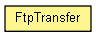

org.waarp.ftp.core.data
Class FtpTransfer
java.lang.Object
 org.waarp.ftp.core.data.FtpTransfer
org.waarp.ftp.core.data.FtpTransfer
public class FtpTransfer
- extends Object

Class that owns one transfer to be run
- Author:
- Frederic Bregier
FtpTransfer
public FtpTransfer(FtpCommandCode command,
List<String> fileOrInfo,
String path)
- Parameters:
command - fileOrInfo - path -
FtpTransfer
public FtpTransfer(FtpCommandCode command,
FtpFile file)
- Parameters:
command - file -
getCommand
public FtpCommandCode getCommand()
- Returns:
- the command
getFtpFile
public FtpFile getFtpFile()
throws FtpNoFileException
- Returns:
- the file
- Throws:
FtpNoFileException
getInfo
public List<String> getInfo()
- Returns:
- the Info
getPath
public String getPath()
- Returns:
- the path
getStatus
public boolean getStatus()
- Returns:
- the status
setStatus
public void setStatus(boolean status)
- Parameters:
status -
toString
public String toString()
- Overrides:
toString in class Object
Copyright © 2009-2012 Waarp. All Rights Reserved.